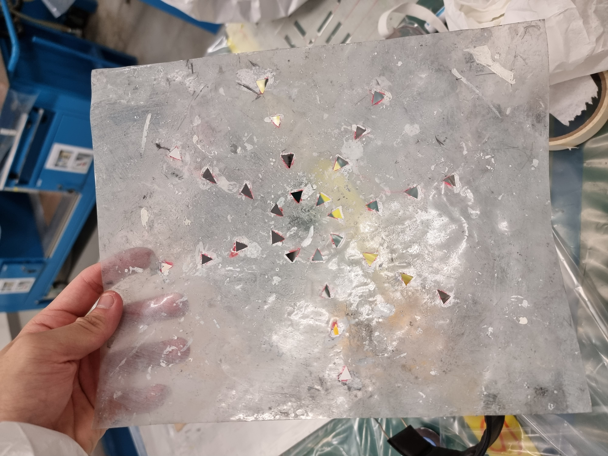
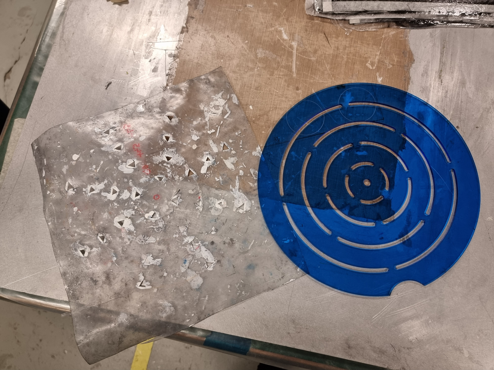

Composite Mark-out
|  |
|---|
| What | How | Result |
| Design a cheap, replaceable and better way of marking composite | Using fusion 360 to design the tool Using a laser cutter to cut design out Product uses scrap material to ensure the part is cheap to reproduce. |
Time for students to mark down reduced to 20 sec Markout are clear Easy to replace Easy to use |
|---|
|  |
|---|